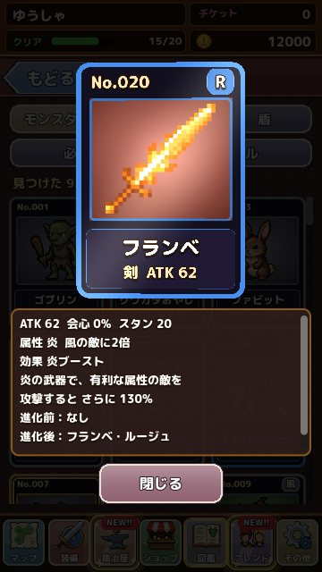

図鑑の楽しみ方
モンスター・武器・盾のカードの集め方、カードが銅・銀・金・虹に光る数、必殺技とスキルの札の読み方、図鑑を埋めるコツを紹介します。 更新：2026-11-23
図鑑の 5 つの札
図鑑は地図の下の欄から開きます。上の段に「モンスター」「武器」「盾」、下の段に「必殺技」「スキル」の、全部で 5 つの札があります。モンスター・武器・盾の札は、トレーディングカードのようなカードを 3 列に並べた形で、いちばん上に「見つけた数 / 全部の数」が出ます。
地底に行けるようになると、モンスター・武器・盾の札の上に「地上」「地底」「海底」「天空」のような世界の札が並びます（行ける世界だけが出ます）。図鑑を開いたときは、今いる世界の札が選ばれています。武器・必殺技・スキルの札では、さらに剣・槍・槌で絞りこめます。

図鑑に載る条件
- モンスター：戦いで一度出会えば載ります。倒せなくても、負けてしまっても、出会ったことは記録に残ります
- 武器・盾：一度手に入れれば載ります。宝箱・ガチャ・ボスの初回の品のほか、進化で手に入れた品も数えます
- 必殺技：一度出したことのある必殺技だけ、名前が出ます
- スキル：はじめから全部が並んでいます
札のいちばん上の「見つけた ○ / ○」は、選んでいる世界の札の中での数です。新しい世界に着いたばかりのときは、その世界の札の数が小さいところから始まります。
まだ見つけていないものは、黒い影と「？？？」で表示されます。STAGE を選んだときの「詳細」に出る敵も同じで、図鑑にいないモンスターは影と「？？？」になります。影の形で、どんなモンスターが待っているかを想像するのも楽しみのひとつです。ガチャや進化で初めて手に入れた品には「NEW!!」の印がつくので、図鑑が 1 枚増えたことがすぐに分かります。
カードの見方
カードの番号は、モンスターならエリアの順に「雑魚 → 中ボス → ボス」と並べ直した番号です。武器は剣・槍・槌の順に、レア度、攻撃力の順で、盾はレア度と DEF の順で並びます。カードのふちの色にも意味があります。
| カード | ふちの色 |
|---|---|
| 雑魚 | N の色（灰色） |
| 中ボス | R の色（青） |
| ラッキーキャラ | R+ の色（水色） |
| ボス | SR の色。金の二重のふちと光の帯 |
| 物語の大きな山場の敵 | SR+ の色。虹色に光る |
| 武器・盾 | その品のレア度の色（レア度の段階と見分け方） |
カードをタップすると大きなカードになります。指でなぞるとカードが傾いて、絵が奥にあるように少しずれて見えます。SR と SR+ のカードは、傾けると光の帯と虹が流れる特別な光り方をします。
大きなカードの下には説明の箱があり、モンスターなら種族・属性・大きさ・弱点・出てくる場所・倒した数、武器と盾なら強さ・効果・手に入れた数・今持っている数が書かれています。武器と盾のカードには、進化する前と進化したあとの品も出ます。まだ手に入れていない進化先は「？？？」なので、「この武器はまだ先がある」と分かるのも図鑑の便利なところです。
また、モンスターのカードをタップすると、そのモンスターと戦うときの曲が流れます。キシドラ！ではボスごとに曲が用意されているものが多いので、図鑑をめくりながら聴き比べてみてください。カードを閉じると、地図の曲にもどります。強いボスほど曲も印象的なので、苦戦したボスの曲を聴き直すと、そのときの戦いを思い出せるかもしれません。音量はメニューの「設定」で、BGM と効果音を別々に 10 段階で変えられます。

カードが光る数
同じモンスターをたくさん倒したり、同じ武器や盾をたくさん手に入れたりすると、カードのふちが光りはじめます。光は 4 段階です。
| 光 | モンスター（倒した数） | 武器・盾（手に入れた数） |
|---|---|---|
| 銅 | 10 体 | 10 個 |
| 銀 | 30 体 | 30 個 |
| 金 | 50 体 | 50 個 |
| 虹 | 100 体 | 100 個 |
武器と盾は「今持っている数」ではなく「これまでに手に入れた数」で数えるので、売ったり強化の材料にしたりしても減りません。数は 999,999 まで数えます。素材や道具は光りません。雑魚のカードは、同じ STAGE を何度も回っているうちに自然と銅や銀になっていきますが、ボスや中ボスを 100 体倒して虹にするのはなかなかの道のりです。お気に入りのボスのカードを虹にするのは、やりこみの大きな目標になります。
必殺技とスキルの札
下の段の 2 つの札は、カードではなく一覧になっています。
- 必殺技：出したことのある必殺技だけ名前が出て、ほかは「？？？」です。名前の前の「＊」は、今の装備で出せる印です。くわしく見ると、必殺技に必要なスキルの順番が色分けされます。黄色は装備している武器にあるスキル、白は持ち物の武器にあるスキル、灰色はまだ持っていないスキルです
- スキル：すべてのスキルが並びます。くわしく見ると、スキルの説明（使う ST・威力・当たる数など）と、そのスキルが順番に入る必殺技の一覧が出ます
「スキル」の札の逆引きはとても便利です。たとえば手に入れた武器に「ヤリ払い」が入っていたら、ヤリ払いを使う必殺技を調べて、次に組み合わせる武器を探せます。必殺技の順番の考え方は スキルと必殺技のつなぎ方 でくわしく説明しています。
図鑑の数はプロフィールとフレンドにも残る
図鑑の進み具合は、自分だけのものではありません。メニューの「プロフィール」の記録には、クリアした STAGE の数や宝玉の数と並んで、図鑑の数が出ます。この記録はフレンドの画面からも見えるので、フレンドがどれだけモンスターや武器を集めているかを比べることもできます。
数え方には少し決まりがあります。アーケディア城にある練習用のカカシは、何度倒しても倒した数にも図鑑にも入りません。いっぽう、蜃気楼のダンジョンで倒したボスは、ふつうの STAGE と同じように倒した数に入ります。ボスのカードを光らせたいなら、そのボスが出る STAGE をくり返すか、ボスが続けて出てくる場所で戦うのが近道です。
必殺技の札を埋めるには、まず「出し方」を知ることが大切です。旅の仲間から借りる武器のひとことは必殺技のヒントになっていて、借りた武器で一度出せば、その必殺技は図鑑に名前が載ります（フレンドとレンタル武器）。「？？？」の必殺技が残っているときは、スキルの札の逆引きで、手持ちのスキルからつながりそうな組み合わせを探してみてください。
蜃気楼カード
蜃気楼のダンジョンで倒したボスは、「蜃気楼カード」としても図鑑に残ります。蜃気楼カードは、挑戦の途中で負けてしまっても、倒した分はもらえます。そのボスの大きなカードを開くと「蜃気楼」のボタンが出て、押すと衣装ちがいの蜃気楼の姿に切りかわります。もう一度押すと「通常」にもどります。蜃気楼カードは図鑑の数には数えないので、集めなくても図鑑は完成できますが、ふだんとはちがう姿を見られるのは挑戦した人だけのごほうびです（蜃気楼のダンジョン）。
図鑑を埋めるコツ
- STAGE の詳細を見る：影のモンスターがどの STAGE に出るかが分かります。まだ行っていない STAGE は、STAGE 1 から順に開いていきましょう
- ラッキーキャラを逃さない：ラッキーキャラは図鑑にも 1 枚ずつ載ります。出会うだけで載るので、倒せずに逃げられても図鑑は埋まります
- 進化で埋める：進化先の品は、ふつうの宝箱やガチャには出てこないものが多くあります。武器・盾の図鑑を埋めるには、進化がいちばんの近道です（鍛冶屋の使い方）
- 安い町のガチャも使う：N の武器や盾は、平原の村や港町ポトスの安いガチャでまとめて集められます
- 世界の札ごとに数を見る：地底・海底・天空には、その世界だけのモンスターと品があります。新しい世界に着いたら、その世界の札を開いて「見つけた数」が 0 から増えていくのを確かめましょう。盾はどの世界も N から集め直しになるので、店で売っている盾を買うだけでも数枚埋まります
- たからの STAGE と金策ダンジョンも回る：たからの STAGE や金策ダンジョンでは、宝の番人をはじめ、ふだんの STAGE とは顔ぶれのちがう敵が出てきます（コインと素材の集め方）
- ボスの初回の品を取る：エリアのボスを初めて倒したときにもらえる品の中には、そこでしか手に入らないものもあります